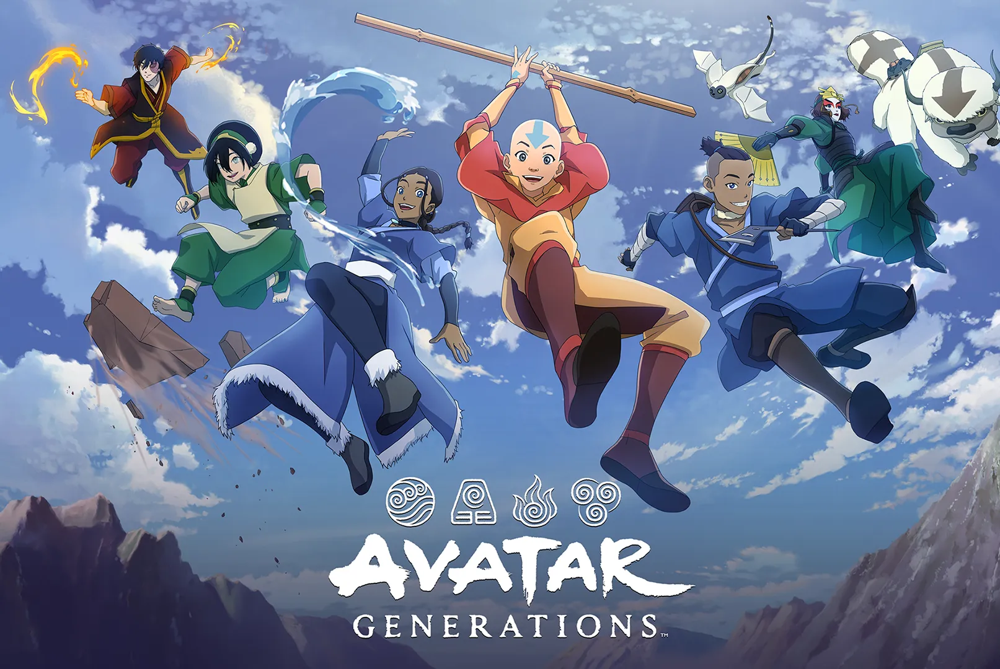
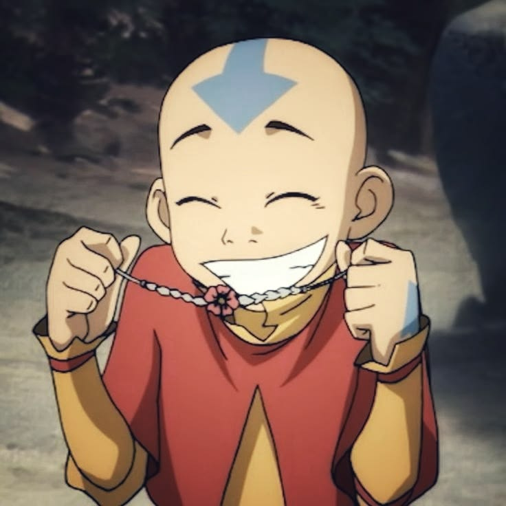
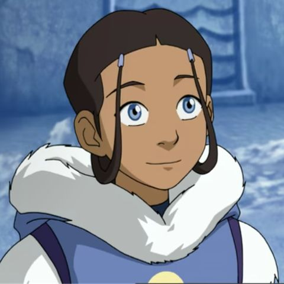
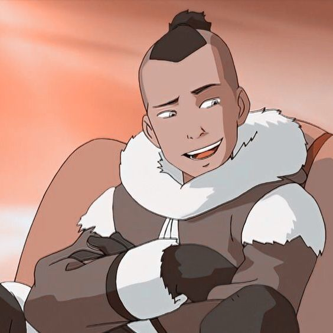
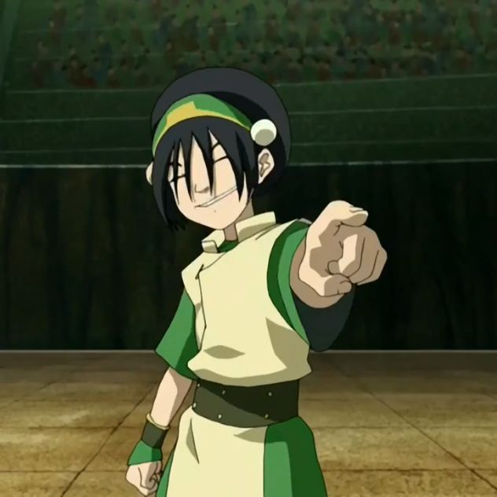
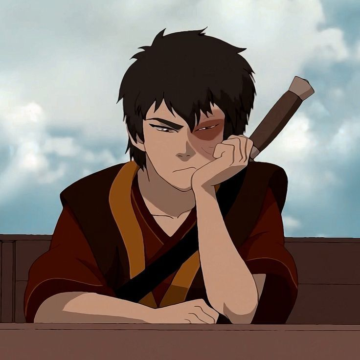

Avatar: The Last Airbender se desarrolla en un mundo de fantasía habitado por humanos, animales fantásticos y espíritus. La humanidad se divide en cuatro naciones : las Tribus del Agua , el Reino Tierra , la Nación del Fuego y los Nómadas del Aire . Cada nación posee un elemento natural propio, sobre el cual basa su sociedad, y dentro de cada nación existen personas conocidas como "maestros elementales" que poseen la capacidad de controlar y manipular desde su nacimiento el elemento que da nombre a su nación. Los creadores de la serie le asignaron a cada arte control de elementos su propio estilo de artes marciales, lo que hizo que heredara las ventajas y debilidades de las artes marciales que le fueron asignadas. Los cuatro tipos de artes control de elementos son el agua control,tierra control ,fuego control y el co aire control.
Cada generación produce una persona capaz de controlar y manipular los cuatro elementos, el Avatar . Cuando un Avatar muere, se reencarna en la siguiente nación en el Ciclo del Avatar . El Ciclo del Avatar es paralelo a las estaciones: otoño para los Nómadas del Aire, invierno para la Tribu del Agua, primavera para el Reino Tierra y verano para la Nación del Fuego. La leyenda cuenta que el Avatar debe dominar cada arte control de elementos en orden, comenzando con su elemento nativo. Esto a veces puede verse comprometido cuando la situación lo requiere, como demuestra Aang en la serie. Para el Avatar, aprender a controlar el elemento opuesto al suyo puede ser extremadamente desafiante y difícil. Esto se debe a que los artes de control de elementos opuestos se basan en estilos y disciplinas de lucha opuestos. El control del fuego y el control del agua son opuestos, al igual que el control de la tierra y el control del aire.
El Avatar posee un poder y habilidad únicos llamado Estado Avatar ; un mecanismo de defensa que le otorga todo el conocimiento, los poderes y las habilidades de todos los Avatares anteriores y actúa como un mecanismo de defensa autoactivable, aunque puede hacerse sujeto a la voluntad si el usuario abre sus chakras corporales . Si un Avatar muere en el Estado Avatar, el ciclo de reencarnación se romperá y el Avatar dejará de existir. A través de las eras, incontables encarnaciones del Avatar han servido para mantener a las cuatro naciones en armonía y mantener la paz y el orden mundial. El Avatar también sirve como puente entre el mundo físico y el Mundo Espiritual , lo que le permite resolver problemas que los maestros elementales normales no pueden. Otra habilidad que nadie más que el Avatar puede hacer es el control de la energía , que Aang demuestra en la lucha contra el Señor del Fuego Ozai en el Bosque Wulong .


Aang es el protagonista de la serie, un nene de 112 años. Biológicamentte tiene doce años, pero estuvo congelado en un iceberg durante cien. Este es el Avatar, el espíritu del mundo manifestado en forma humana, cuya deber es mantener el balance o la paz entre las naciones del mundo. Aang es un personaje alegre y carismatico con el que los espectadores pueden simpatizar facimente,lo cual contrasta con la gran responsabilidad que carga en sus hombros,ya que a pesar de ser el avatar y el encargado de detener la guerra con la nación del fuego derrotando al señor del fuego Ozai, Aang sigue siendo un nene que ama hacer travesuras con sus amigos,tener aventuras.Pero sobretodo el mayor deseo de Aang es pertenecer a un grupo tener una familia,familia que encuentra al estar con sus amigos y compañeros de viaje a lo largo de la historia.

Katara es una maestra agua de catorce años perteneciente a la Tribu Agua del Sur,siendo esta la única maestra agua de la tribu. Katara descubre y libera a Aang de un iceberg en el que había estado atrapado durante cien años. Junto a su hermano Sokka, de quince años, acompaña a Aang en su misión para derrotar al Señor del Fuego y traer la paz al mundo. UNo de los personajes mas realistas de la serie una chica que ama a sus compañeros , se preocupa y cuida de ellos como una madre.Su relación con su hermano debe ser una de las mejores representaciones de hermandad que vi por que a pesar de las peleas ellos siempre se apoyan el uno al otro

Sokka es un guerrero de quince años de la Tribu Agua del Sur. Junto a su hermana Katara, acompaña a Aang en su misión para derrotar al Señor del Fuego. El bromista del grupo, Sokka se describe a sí mismo como "amante de la carne" y "sarcástico". A diferencia de sus compañeros, Sokka no puede controlar los elementos, pero la serie, aunque a menudo lo convierte en víctima de la comedia a su costa, le brinda frecuentemente oportunidades para usar su ingenio y sus armas, incluyendo su fiel bumerán, una maza de batalla y una espada que forjó con un meteorito.Uno de los mejores personajes un genio, la perfecta combinación entre gracioso y ingenioso

Toph Beifong es una maestra tierra ciega de doce años. Esta abandona a su adinerada familia y su cómodo hogar para unirse a Aang en su aventura, con la intención de enseñarle a controlar la tierra. Aunque ciega, Toph "ve" al sentir las vibraciones del suelo con los pies. Se convierte en la primera maestra tierra en aprender a controlar el metal y es considerada una de las maestras tierra más poderosas del mundo.Mi personaje favorito,me parece increible este persoanje el como usa algo que otros llamarian desventaja a su favor para ser aun mas poderosa.Ademas de tener esa personalidad chistosa e arrogante pero sin perder su delicadeza y el factor de que Toph aun es una nena.

Zuko es el príncipe exiliado de dieciséis años de la Nación del Fuego y uno de los principales antagonistas de la serie. Debido a sucesos de su pasado, su padre, el Señor del Fuego Ozai, lo considera un completo fracaso, y Zuko siente que debe capturar al Avatar para recuperar su honor. Con el tiempo, Zuko lucha por controlar su ira, su autocompasión y sus relaciones familiares; mientras tanto, desarrolla empatía por los pueblos que su nación ha aterrorizado. En el Libro Tres, deserta de la Nación del Fuego y se une a Aang y su equipo para enseñarle a controlar el fuego. Al final de la serie, es coronado gobernante de la Nación del Fuego.Otro de mis favoritos alto desarrollo de personaje se mando, me parec impresionante el como se da cuenta que fue engañado toda su vida.Otros puntos a favor son sus mometos con su tio cada uno me hace o reir o llorar